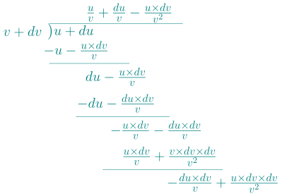

6.和、差、积与商的导数
我们已经学习了如何对 \(x^2 + c\) 或 \(ax^4\) 这样的简单代数函数求导，接下来需要探讨的是，如何对两个或多个函数的和进行求导。
举个例子，假设
那么它的 \(\dfrac{dy}{dx}\) 会是什么？我们该如何着手处理这类新问题？
答案其实非常简单：你只需逐个对这些函数分别求导，然后把结果相加即可。例如，上面这个例子的结果就是：
如果你对这个做法是否正确还有疑问，不妨用更一般化的方法，从基本原理出发来验证一下。具体过程如下：
设 \(y = u + v\)，其中 \(u\) 是关于 \(x\) 的任意函数，\(v\) 是另一个关于 \(x\) 的函数。当 \(x\) 增加到 \(x+dx\) 时，\(y\) 会相应地增加到 \(y+dy\)，同时 \(u\) 增加到 \(u+du\)，\(v\) 增加到 \(v+dv\)。
于是我们有：
减去原来的等式 \(y = u + v\)，得到
两边同时除以 \(dx\)，便得到：
这就为我们之前的做法提供了理论依据：对每个函数分别求导，然后将结果相加。现在我们再回过头来看前面那个例子，把两个函数的具体形式代入，采用第3章介绍的记号，就有
结果与之前完全一致。
如果有三个关于 \(x\) 的函数，我们称它们为 \(u\)、\(v\) 和 \(w\)，即
至于减法，结论也顺理成章：如果函数 \(v\) 前面带有负号，那么它的导数也会是负的。例如，对
求导，结果自然如此。
然而，当我们处理乘积时，情况就没那么简单了。
积的导数
假设我们要对下面这个表达式求导：
该怎么办呢？结果当然不会是 \(2x × 4ax^3\)；因为很容易看出，像 \(c × ax^4\) 或 \(x^2 × b\) 这样的项在 \(2x × 4ax^3\) 中根本没有体现出来。
现在，我们有两种方法可以解决这个问题。
第一种方法
先进行乘法运算，把表达式展开后再求导。。
于是，我们将 \(x^2 + c\) 和 \(ax^4 + b\) 相乘，得到：
然后对这个结果求导，得到：
第二种方法
回到微分的定义，考虑方程
其中 \(u\) 是关于 \(x\) 的一个函数，\(v\) 是另一个关于 \(x\) 的函数。当 \(x\) 增加到 \(x+dx\) 时，\(y\) 变为 \(y+dy\)，\(u\) 变为 \(u+du\)，\(v\) 变为 \(v+dv\)。于是我们有：
其中，\(du · dv\) 是一个二阶无穷小量，在取极限时可以忽略不计。因此，上式简化为：
再减去原来的等式 \(y = u · v\)，得到：
两边同时除以 \(dx\)，便得到：
这个结果告诉我们具体的操作步骤是：
对两个函数的乘积求导时，将每个函数乘以另一个函数的导数，然后把这两个乘积相加。
你应当注意到，这个过程实际上可以这样理解：先将 \(u\) 视为常数，对 \(v\) 求导；再将 \(v\) 视为常数，对 \(u\) 求导；最终的导数 \(\dfrac{dy}{dx}\) 就是这两部分结果的和。
现在，我们已经得到了这个通用法则，接下来就把它应用到前面那个具体例子中。
我们要对乘积
求导。
令 \(u = x^2 + c\)，\(v = ax^4 + b\)。
根据刚刚推导出的法则，可以写出：
结果与之前完全一致。
最后，我们要对商求导。
商的导数
考虑这样一个例子：\(y = \dfrac{bx^5 + c}{x^2 + a}\)。在这种情况下，事先尝试把除法算出来是行不通的，因为 \(x^2 + a\) 无法整除 \(bx^5 + c\)，而且两者也没有公因式。因此，我们别无选择，只能回到基本原理，推导出一个通用法则。
我们设
其中 \(u\) 和 \(v\) 是自变量 \(x\) 的两个不同函数。当 \(x\) 变为 \(x + dx\) 时，\(y\) 变为 \(y + dy\)，\(u\) 变为 \(u + du\)，\(v\) 变为 \(v + dv\)。于是有：
现在进行代数除法运算：

由于这些余项都是二阶无穷小量，在极限过程中可以忽略不计，因此除法到此为止即可——后续产生的余项只会更小。
于是我们得到：
从上式中减去原来的 \(y = \dfrac{u}{v}\)，得到：
这就给出了分式求导的法则：
用除数函数乘以被除数函数的微分系数；然后用被除数函数乘以除数函数的微分系数，并相减。最后除以除数函数的平方。
回到我们的例子
设 \(bx^5 + c = u\) 并设 \(x^2 + a = v\)。
则有：
计算分式的导数常常比较繁琐，但只要掌握了这个法则，过程本身并不困难。
接下来我们给出一些完整求导的例子，来学习符合使用这些法则。